Rio Branco - AC
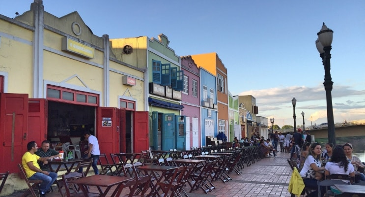
Rio Branco é um município brasileiro, capital do estado do Acre, na Região Norte do país e principal centro financeiro, corporativo, político e cultural do estado.
Sua população, de acordo com o Instituto Brasileiro de Geografia e Estatística (IBGE), é de 419 452 habitantes, fazendo de Rio Branco a sétima cidade mais populosa da Região Norte do Brasil.
Maceió - AL
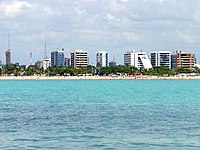
Maceió é um município brasileiro, capital do estado de Alagoas, na Região Nordeste do país. É o município mais populoso de Alagoas
A cidade tem uma temperatura média anual de 25 a 29 graus centígrados. Na vegetação original do municípiopode-se observar a presença de herbáceas e arbustivas (poucas árvores e espaçadas).
Manaus - AM
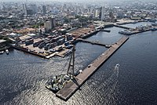
Rio Branco é um município brasileiro, capital do estado do Acre, na Região Norte do país e principal centro financeiro, corporativo, político e cultural do estado.
Sua população, de acordo com o Instituto Brasileiro de Geografia e Estatística (IBGE), é de 419 452 habitantes, fazendo de Rio Branco a sétima cidade mais populosa da Região Norte do Brasil.
Macapá - AP
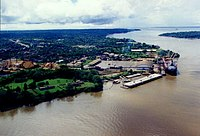
Macapá, capital do estado do Amapá, situa-se no sudeste do estado e é a única capital estadual brasileira que não possui interligação por rodovia a outras capitais.
O município detém o 94º maior produto interno bruto da nação, com 8,9 bilhões de reais e é a quinta cidade mais rica do norte brasileiro, respondendo por 2,85% de todo PIB da região
Salvador - BA
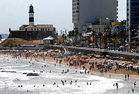
Salvador é um município brasileiro e capital do estado da Bahia. Situada na Zona da Mata da Região Nordeste do Brasil, Salvador é notável em todo o país pela sua gastronomia, música e arquitetura.
A influência africana em muitos aspectos culturais da cidade a torna o centro da cultura afro-brasileira a cidade é uma das mais antigas do continente americano
Fortaleza - CE
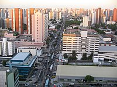
Fortaleza é um município brasileiro, capital do estado do Ceará, situado na região Nordeste do país.
A cidade desenvolveu-se às margens do riacho Pajeú, e sua toponímia é uma alusão ao Forte Schoonenborch, o qual deu origem ao município, construído pelos holandeses. O lema de Fortaleza significa "força, valor, coragem".
Vitória - ES
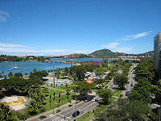
Vitória é um município brasileiro, capital do estado do Espírito Santo, na Região Sudeste do país. É uma das três capitais do país cujo centro administrativo e a maior parte do município estão localizados em uma ilha.
Vitória limita-se ao norte com o município da Serra, ao sul com Vila Velha, a leste com o Oceano Atlântico e a oeste com Cariacica.
Goiânia - GO
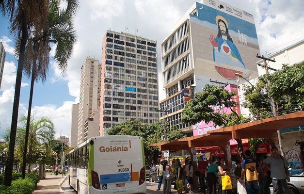
Goiânia é um município brasileiro, capital do estado de Goiás. Possui uma geografia contínua, com poucos morros e baixadas, caracterizada por ser uma região do Planalto Central do Brasil.
Localizada no centro do seu estado, foi planejada e construída para ser a capital política e administrativa de Goiás sob influência da Marcha para o Oeste.
São Luis - MA
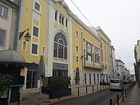
Com uma população estimada em 1.108.975 habitantes, São Luís é o município mais populoso do Maranhão e o quarto da Região Nordeste. Sua área é de 831,7 km².
O município é sede da Região de Planejamento da Ilha do Maranhão (composta pelos 4 municípios localizados na ilha de Upaon-Açu) e da Região Metropolitana de São Luís.
Campo Grande - MS
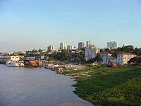
Campo Grande é um município brasileiro da região Centro-Oeste, capital do estado de Mato Grosso do Sul. Foi fundada por mineiros, que vieram aproveitar os campos de pastagens nativas e as águas cristalinas da região dos cerrados.
A cidade foi planejada em meio a uma vasta área verde, com ruas e avenidas largas e com diversos jardins por entre as suas vias.
Cuiabá- MT
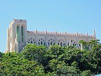
Cuiabá é um município brasileiro, capital do estado de Mato Grosso, Região Centro-Oeste do país. Fundado em 1719 por Pascoal Moreira Cabral e descoberto por Miguel Sutil, ambos bandeirantes nascidos na cidade de Sorocaba-SP.
É conhecida como "cidade verde", por causa da grande arborização.
Belo Horizonte - MG
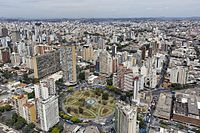
Belo Horizonte é um município brasileiro e a capital do estado de Minas Gerais. O sexto município mais populoso do país, possui uma geografia diversificada, com morros e baixadas.
Foi planejada e construída para ser a capital política e administrativa do estado mineiro sob influência das ideias do positivismo.
Belém-PA
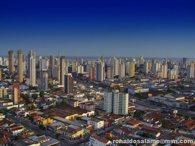
Belém, frequentemente chamado de Belém do Pará é um município brasileiro e capital do estado do Pará, fundado por portugueses às margens da Baía do Guajará e Rio Guamá.
Devido ser integrante da Amazônia Oriental resulta em um clima quente úmido e na capital mais chuvosa do Brasil. É o município mais populoso do Pará e o segundo da região Norte
João Pessoa - PB

João Pessoa é um município brasileiro, capital do estado da Paraíba.é a oitava cidade mais populosa da Região Nordeste e a 23ª do Brasil.
Fundada em 5 de agosto de 1585 com o nome de Cidade Real de Nossa Senhora das Neves, João Pessoa é considerada a terceira cidade mais antiga do Brasil
Curitiba - PR
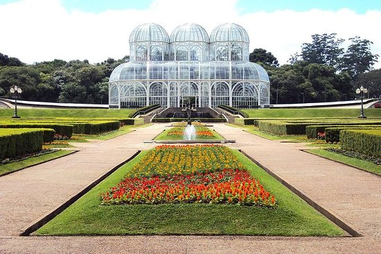
Curitiba é um município brasileiro, capital do estado do Paraná, localizado a 934 metros de altitude no Primeiro Planalto Paranaense.
Fundado em 1693, a partir de um pequeno povoado bandeirante, Curitiba tornou-se uma importante parada comercial e manteve um ritmo de crescimento pela chegada de uma grande quantidade de imigrantes europeus
Recife-PE
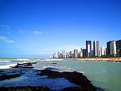
Recife é um município brasileiro, capital do estado de Pernambuco, localizado na Região Nordeste do país. Com área territorial de aproximadamente 218 km², é formado por uma planície aluvial, tendo as ilhas, penínsulas e manguezais como suas principais características geográficas.
Cidade nordestina com o melhor Índice de Desenvolvimento Humano.
Teresina - PI
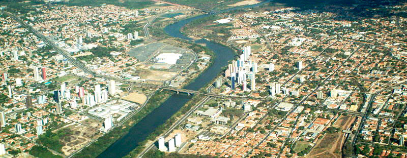
Teresina é um município brasileiro, capital do estado do Piauí e a única capital da Região Nordeste que não se localiza no litoral.
É a cidade mais populosa do Piauí. Teresina é a 21ª maior cidade do Brasil e a 17ª maior capital de estado, sendo a 7ª capital mais populosa e a 7ª capital mais rica do Nordeste.
Rio de Janeiro - RJ
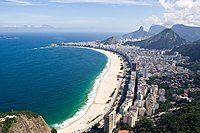
Rio de Janeiro é o Maior destino turístico internacional no Brasil, da América Latina e de todo o Hemisfério Sul.
Classificada como uma metrópole, exerce influência nacional, seja do ponto de vista cultural, econômico ou político brasileiros e é um dos principais centros econômicos, culturais e financeiros do país
Natal - RN
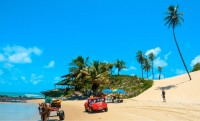
Natal é um município brasileiro, capital do estado do Rio Grande do Norte, na Região Nordeste do país.
Fundada no Natal de 1599, às margens do Rio Potenji, que separa a Zona Norte das demais, a cidade foi ocupada por holandeses entre 1633 e 1654, período no qual foi denominada de Nova Amsterdã.
Porto Alegre - RS
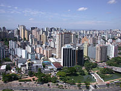
Porto Alegre é um município brasileiro e a capital do Rio Grande do Sul.
A cidade foi constituída a partir da chegada de açorianos século XVIII. No século XIX contou com o influxo de muitos imigrantes alemães e italianos, recebendo também espanhóis, africanos, poloneses e libaneses.
Sede da maior concentração urbana da região Sul e quinta mais populosa do Brasil.
Porto Velho - RO
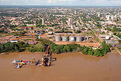
Porto Velho é um município brasileiro e a capital do estado de Rondônia. Com uma população de 548.952 habitantes, conforme estimativas do Instituto Brasileiro de Geografia e Estatística, é o município mais populoso de Rondônia e o terceiro mais populoso da Região Norte, atrás apenas de Manaus e Belém.
Boa Vista - RR
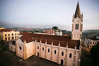
Boa Vista é um município brasileiro e capital do estado de Roraima, Região Norte do país. Concentrando cerca de dois terços dos habitantes do estado, situa-se na margem direita do rio Branco. É sede da Região Metropolitana de Boa Vista, além de ser a capital estadual mais setentrional do Brasil e a única localizada totalmente ao norte da linha do Equador.
Florianópolis - SC
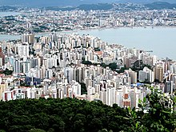
Florianópolis é a capital do estado brasileiro de Santa Catarina, na região Sul do país. O município é composto pela ilha principal, a ilha de Santa Catarina, a parte continental e algumas pequenas ilhas circundantes. A cidade tem uma população de 516. 524 habitantes
A cidade é conhecida por ter uma elevada qualidade de vida.
São Paulo - SP
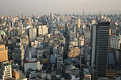
São Paulo é um município brasileiro, capital do estado homônimo e principal centro financeiro, corporativo e mercantil da América do Sul.
É a cidade mais populosa do Brasil e a cidade brasileira mais influente no cenário global, sendo a 11.ª cidade mais globalizada do planeta, recebendo a classificação de cidade global alfa.
Aracajú - SE
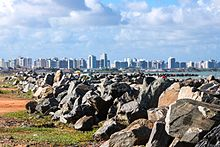
Aracaju é um município brasileiro, capital do estado de Sergipe. Localiza-se no leste do estado, sendo cortada por rios como o Sergipe e o Poxim. Sua população é de 672 614 habitantes.
Apesar de ser a menos populosa das capitais nordestinas, sua localização perfaz como importante ponto estratégico enquanto centro urbano, econômico, cultural e político para o país.
Palmas - TO
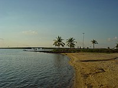
Palmas é um município brasileiro, capital e também a maior cidade do estado do Tocantins. A cidade foi fundada em 20 de maio de 1989, logo após a criação do Tocantins pela Constituição de 1988.
A partir daí, a cidade começou a ser construída pelos trabalhadores que vieram do interior do Tocantins e de vários outros estados do país.
Brasília - DF
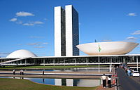
O Distrito Federal é uma das 27 unidades federativas do Brasil. Situado na Região Centro-Oeste, é a menor unidade federativa brasileira e a única que não tem municípios, sendo dividida em 33 regiões administrativas, totalizando uma área de 5 760,784 km².
Em seu território, está localizada a capital federal do Brasil, Brasília.